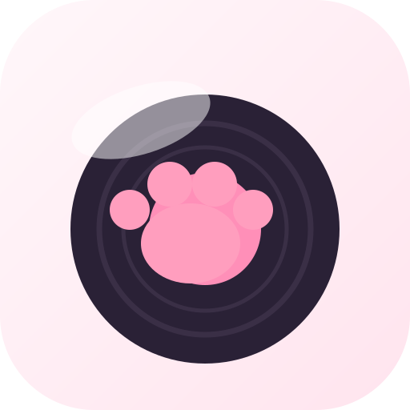
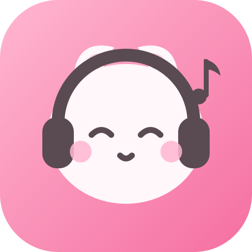
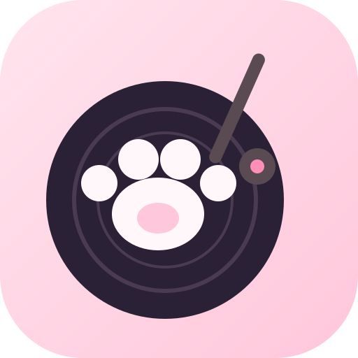
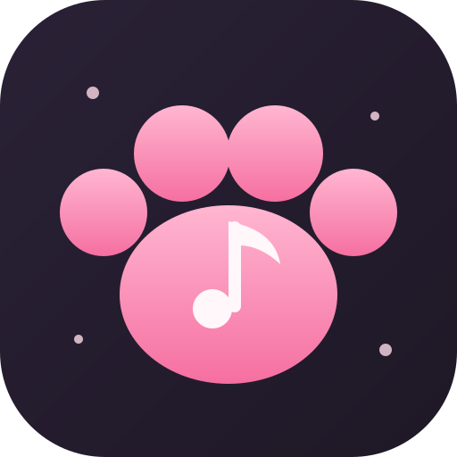
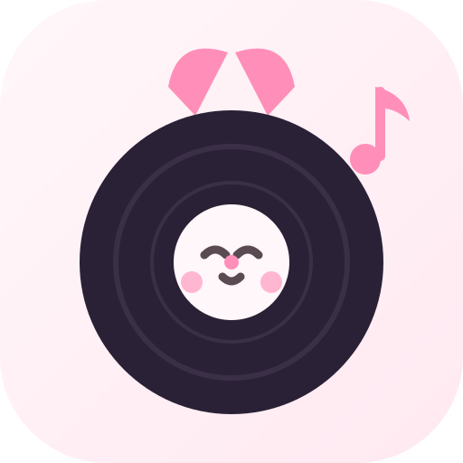
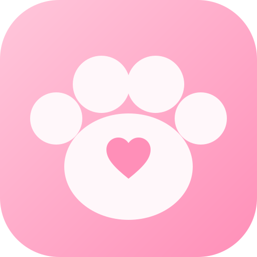
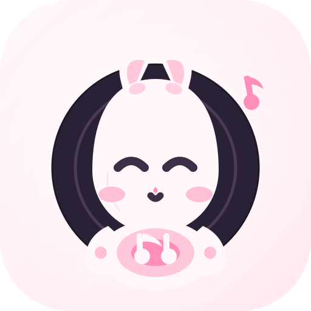
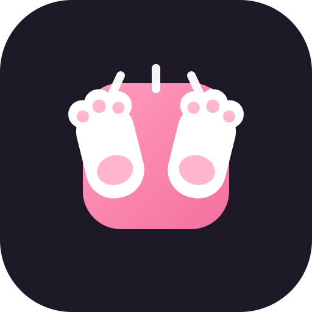
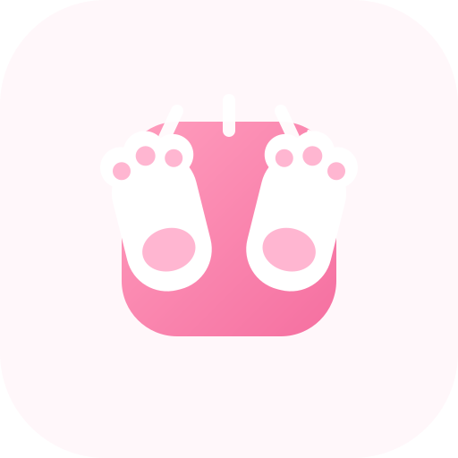

每套展示 160 / 64 / 32 / 16px 四档(任务栏最小到 16px,重点看小尺寸是否还认得出"猫爪 + 音乐")。
任务栏模拟条 = Windows 实际观感。选定后我会把该方案写入 appicon.svg/appiconfg.svg 并重新生成全平台图标。

160px现有方案的矢量精修版。信息最全(爪+胶+音乐),但元素多,小尺寸下爪与胶会糊在一起。

160px拟人度最高:眯眯笑眼 + 腮红 + 耳机,"萌"最直白。缺点:16px 下五官细节看不清,只剩一只白猫头。

160px"猫爪在打碟"的叙事感最强,掌心肉垫细节加分。中等复杂度,32px 仍可辨。

160px与 App"夜猫模式"深色最统一;粉爪 + 掌心音符,元素克制。浅色任务栏上深底图标反而更跳。

160px猫与音乐的融合最巧妙:唱片中心标签就是一张猫脸,耳朵从唱片后探出。32px 下猫脸略糊但轮廓可辨。

160px元素最少 → 全尺寸最清晰,16px 依然是完整的爪印。牺牲了"音乐"元素(靠掌心心心暗示喜欢音乐)。

160px白猫从唱片后探出,前爪趴在唱片上,掌心粉肉垫叠白色双连音符。猫+音乐+爪三层叙事一次到位; 16px 下仍是清楚的"猫+爪+唱片"剪影。

160px 深
160px 浅完全对标 CatPawAI 的构图语言:纯色底 + 居中渐变卡 + 白爪 + 粉肉垫 + 击掌动效线, 一枚小白音符点出"音乐"。元素极少,16px 依旧干净。深浅两版任选。